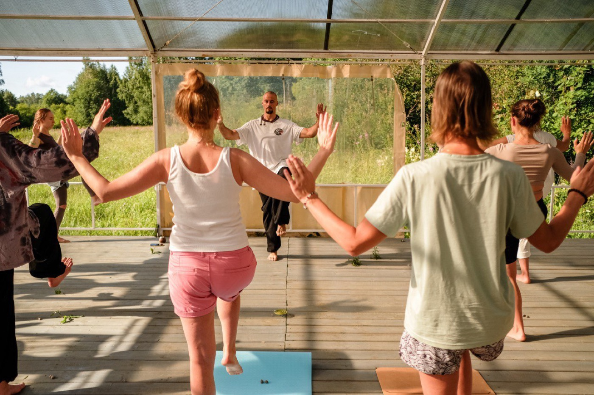

Анатомическая безопасность
Вы учитесь видеть опору, ось, амплитуду, компенсации и зоны риска: спина, шея, таз, колени, плечи, дыхание.
Авторский курс Ильи Баринова
Фундаментальный курс по йоге, телесной грамотности и устойчивой практике.
Для тех, кто хочет не просто повторять асаны, а понимать тело, дыхание, внимание и принципы безопасности на уровне, который можно применять самостоятельно.
«Точка опоры» собирает йогу в ясную систему: как входить в асаны без лишнего риска, как слышать ограничения тела, зачем нужно дыхание, как внимание меняет качество движения и почему регулярность важнее героических рывков.
Метод
Подход Ильи соединяет йогу, цигун, тайцзицюань, дыхательные техники, медитацию и опыт реабилитационной работы. Поэтому курс не уводит в абстракции: каждый принцип проверяется телом, дыханием и устойчивостью в обычной жизни.
Вы учитесь видеть опору, ось, амплитуду, компенсации и зоны риска: спина, шея, таз, колени, плечи, дыхание.
Практика дыхания подается как инструмент регуляции состояния, а не как набор эффектных техник.
Фокус не на внешней сложности формы, а на том, как движение собирается изнутри: через вес, вектор, тонус и внимание.
Курс ведет к самостоятельности: вы понимаете, что делать, зачем делать и как адаптировать практику под свой день.
Для кого
Хочется заниматься, но есть страх ошибиться, перегрузить тело или потеряться среди разных подходов.
Асаны знакомы, но не всегда понятно, что в них искать, как дышать и почему после занятия бывает разный эффект.
Есть напряжение, усталость, расфокус или ощущение, что нужна регулярная практика, которую реально удержать.
Преподаете, ведете телесные занятия, массаж, ЛФК или реабилитацию и хотите точнее видеть движение и состояние ученика.
Результат
Что вы освоите
Каждый блок курса переводит теорию в телесный опыт. Вы не просто слышите объяснение, а проверяете его в движении, дыхании и ощущениях.

Формат
Участники проходят темы вместе: практика, разбор, вопросы, домашние ориентиры и постепенное усложнение. Так знания не остаются конспектом, а превращаются в телесный навык.
Программа
Программа построена как фундамент: сначала безопасность и телесная логика, затем дыхание, внимание, медитация и интеграция в собственный ритм.
Цели йоги, место асан, дыхания и медитации. Как отличать тренировку, восстановление и внутреннюю работу.
Стопы, таз, позвоночник, шея. Устойчивость, амплитуда, компенсации и безопасное движение.
Ключевые формы, типовые ошибки, работа с ограничениями и варианты для разного уровня подготовки.
Пранаяма, очистительные техники, дыхательный ритм и связь дыхания с состоянием нервной системы.
Работа с рассеянностью, наблюдением, внутренней тишиной и устойчивостью.
Как продолжать практику самостоятельно и подготовиться к финальному ретриту.
Финальный ретрит
Онлайн-часть дает базу и регулярность, а ретрит помогает почувствовать практику глубже: в группе, в тишине, с большим вниманием к телу, дыханию, состоянию и личным ограничениям.
Участие в ретрите можно обсудить отдельно: онлайн-курс остается полноценным маршрутом сам по себе.

Научная опора
Курс не подменяет медицину и не обещает вылечить заболевания. Его фокус — грамотное движение, дыхание, внимание и регулярность: направления, которые изучаются в современной доказательной базе как часть немедикаментозной поддержки здоровья и качества жизни.
В курсе это переводится в осторожный принцип: двигаться, но не через боль; развивать силу, подвижность и осознанность постепенно.
WHO guidelineЙога может быть полезной частью движения, но не должна подаваться как универсальное лечение. Поэтому курс строится через адаптации и учет ограничений.
Cochrane reviewНа курсе дыхание не форсируется: участники учатся мягкому ритму, паузе и наблюдению за реакцией тела.
Systematic reviewМедитация в курсе подается как тренировка внимания: без мистификации, без давления и без требования «выключить мысли».
Systematic reviewРанняя регистрация
Мы пришлем подробности по датам, формату, стоимости и финальному ретриту. Заявка ни к чему не обязывает: сначала вы получите условия и сможете спокойно принять решение.
Оставить заявкуFAQ
Да. Курс рассчитан на спокойный вход в практику: с техникой безопасности, объяснением базовых принципов и адаптациями.
Да. Он полезен тем, кто хочет собрать практику в систему и глубже понять связь асан, дыхания, внимания и состояния.
Достаточно коврика и комфортного места для занятий. Дополнительные опоры можно будет подобрать по ситуации.
Да, записи будут доступны участникам на период курса, чтобы можно было пересматривать материал и возвращаться к сложным темам.
Да. Онлайн-часть можно пройти отдельно. Ретрит дает дополнительное погружение, но не является обязательным условием участия.
Курс строится с вниманием к безопасности, но при выраженных ограничениях или боли важно заранее учитывать рекомендации врача.
Заявка
После отправки откроется Telegram с готовым сообщением. Можно дописать детали и отправить заявку в удобном формате.